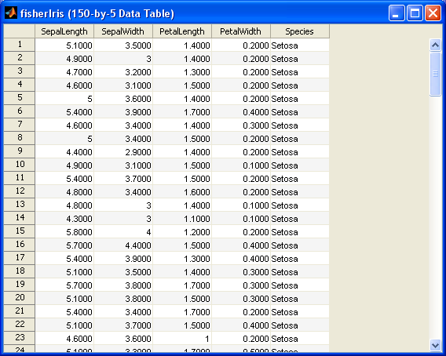
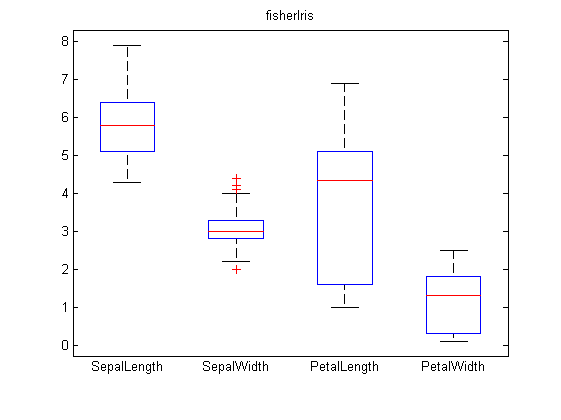
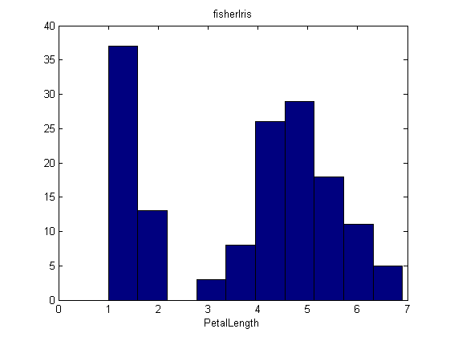
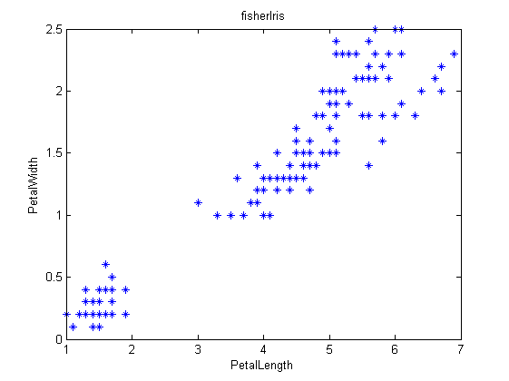
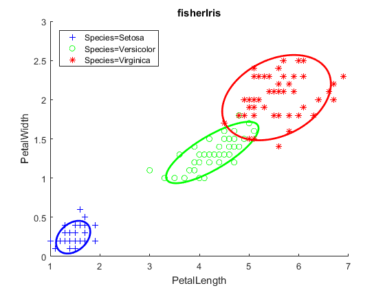
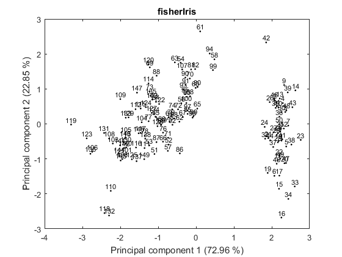
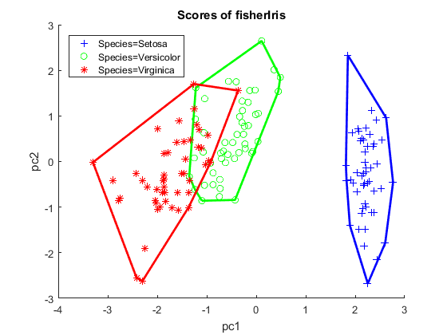

Using the Table Class
This is a demo file for presenting some features of the Table class.
Usage:
demoTable
Contents
Read and display data
tab = Table.read('fisherIris.txt');
disp(tab(1:5, :));
summary(tab);
show(tab);
SepalLength SepalWidth PetalLength PetalWidth Species
1 5.1 3.5 1.4 0.2 Setosa
2 4.9 3 1.4 0.2 Setosa
3 4.7 3.2 1.3 0.2 Setosa
4 4.6 3.1 1.5 0.2 Setosa
5 5 3.6 1.4 0.2 Setosa
SepalLength SepalWidth PetalLength PetalWidth
Min: 4.3000 Min: 2.0000 Min: 1.0000 Min: 0.1000
1st Qu.: 5.1000 1st Qu.: 2.8000 1st Qu.: 1.6000 1st Qu.: 0.3000
Median: 5.8000 Median: 3.0000 Median: 4.3000 Median: 1.3000
Mean: 5.8433 Mean: 3.0540 Mean: 3.7587 Mean: 1.1987
3rd Qu.: 6.4000 3rd Qu.: 3.3000 3rd Qu.: 5.1000 3rd Qu.: 1.8000
Max: 7.9000 Max: 4.4000 Max: 6.9000 Max: 2.5000
Species
Setosa: 50
Versicolor: 50
Virginica: 50

Plotting functions
figure;
boxplot(tab(:,1:4));
figure;
hist(tab('PetalLength'));
figure;
plot(tab('PetalLength'), tab('PetalWidth'), '*');
  
Management of groups
figure;
scatterGroup(tab('PetalLength'), tab('PetalWidth'), tab('Species'), ...
'Envelope', 'InertiaEllipse', ...
'LegendLocation', 'NorthWest');
disp(groupfun(tab(:,1:4), tab('Species'), @mean));
SepalLength SepalWidth PetalLength PetalWidth
Species=Setosa 5.006 3.418 1.464 0.244
Species=Versicolor 5.936 2.77 4.26 1.326
Species=Virginica 6.588 2.974 5.552 2.026

Principal Component Analysis
irisPca = Pca(tab(:, 1:4), 'display', 'off');
disp(irisPca);
figure;
scorePlot(irisPca, 1, 2);
figure;
loadingPlot(irisPca, 1, 2);
figure;
scatterGroup(irisPca.scores(:, 1), irisPca.scores(:, 2), tab('Species'), ...
'LegendLocation', 'NorthWest');
Principal Component Analysis Result
Input data: fisherIris
scaled: true
means: <1x4 double>
scores: <150x4 Table>
loadings: <4x4 Table>
eigenValues: <4x3 Table>


